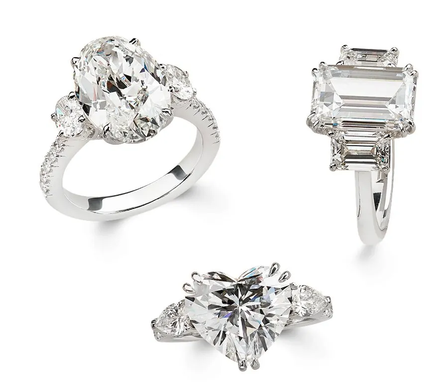
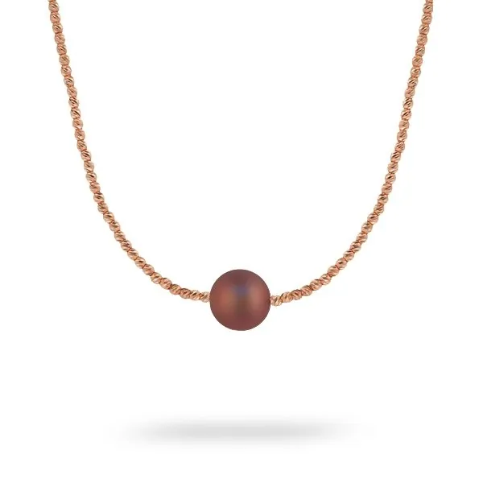
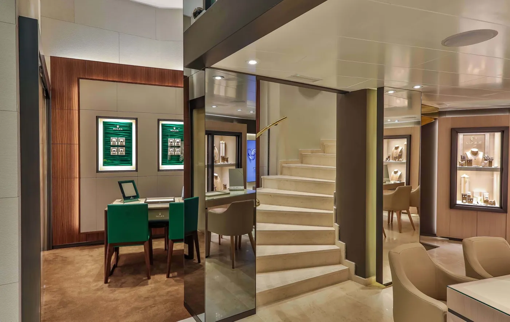
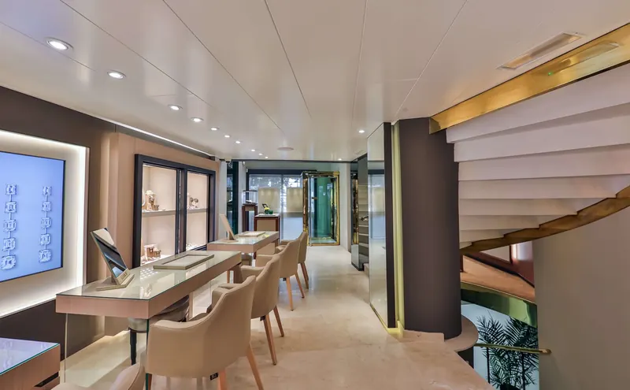
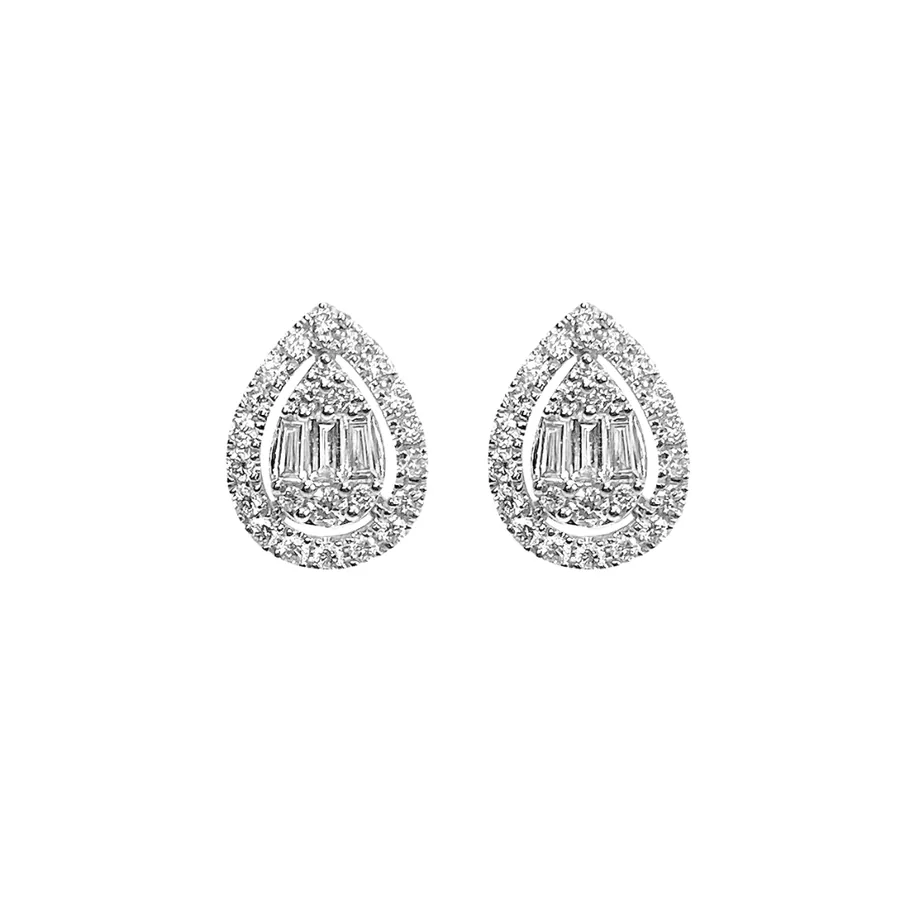
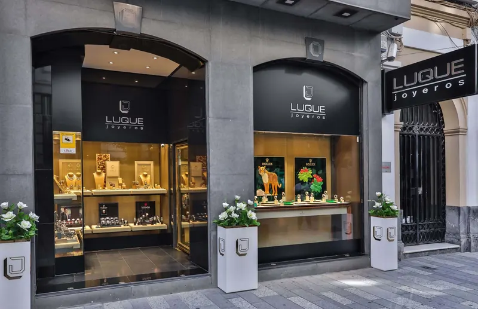

Compromiso y alianzas
- Vienes con
Quiero que sea para siempre y no sé por dónde empezar.
- En la mesa
- Te enseñamos tallas y monturas con calma, y diseñas tu alianza con nosotros.
- Te llevas
- Tu anillo, ajustado a tu medida.
Joyería familiar · Cruz Conde 18 · Córdoba
Desde que D. Rafael Luque importaba perlas, a principios de los 60, en esta casa cada pieza se elige sentado, con tiempo y con alguien que te conoce por tu nombre.
★★★★★ 4,9 en 220 reseñas de GoogleDistribuidor Oficial Rolex y Tudor
Distribuidor Oficial Rolex en CórdobaLa sección Rolex conserva el diseño y los contenidos oficiales de la marca. Descubra Rolex en Luque
En la mesa
Siéntate. Te traemos las piezas a la mesa, una bandeja cada vez, y no hay prisa por decidir.

Quiero que sea para siempre y no sé por dónde empezar.



El reloj de mi padre ya no va como antes.

Sin prisas
Una persona con nombre, que se sienta contigo.
La atención sin prisas, su gran experiencia y, sobre todo, el cariño y la cercanía.Juan Antonio Moyano · Google
Sin presiones, sabiendo escuchar y atender nuestras necesidades.Gema Estepa Almena · Google
Nos ofrecieron unas copas de Moët Chandon para brindar por tan maravilloso momento.Luis Noales, que vino desde Huelva · Google
La casa
Desde principios de los 60. La historia de Luque se cuenta como se enhebra un collar: perla a perla.
D. Rafael Luque Rodríguez empieza como importador de perlas, en colaboración con los mejores cultivadores.
La joyería abre en el centro de Córdoba. Joyería propia, relojería y taller en la misma casa.
año · a confirmar con la familiaDistribuidor Oficial Rolex y Tudor, y la misma manera de atender: nada impersonal, nada al azar.

«El esfuerzo, cariño y pasión por la perfección están reflejados en cada detalle.»Luque Joyeros
Lo que dicen de la casa
Allí las joyas brillan de una manera especial.
Oscar Reyes · Google
«Llegué a Luque Joyeros con la ilusión de encontrar una joya que llevaba muchos años soñando tener, y no solo la encontré…»
«Íbamos con la idea de un reloj, y gracias a la profesionalidad y el encanto de Mar, salimos con uno muy superior.»
«El trato que nos ha dado Mar ha sido magnífico, nos hizo sentir como en casa.»
★★★★★ 4,9 en 220 reseñas de Google · consultado el 30-sep-2026

Visítanos
Dinos qué te trae y a qué hora te viene bien. Te atendemos sin prisas.